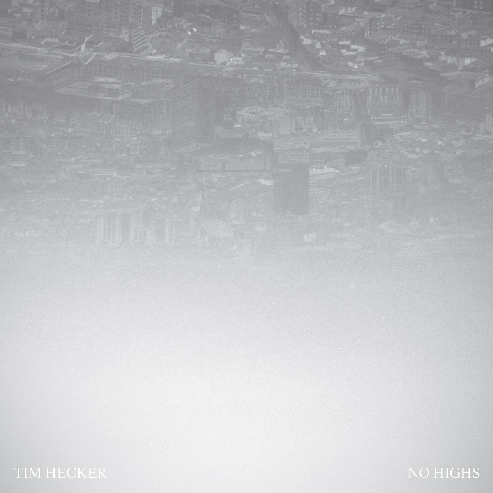

3/29/25
I'm on a Smiths kick.
Heaven Knows I'm Miserable Now - the bass is criminally tight. in general just starting to realize how great their basslines are
Some Girls Are Bigger Than Others - perfect melancholy but sometimes I can't with the lyrics
Half a Person - call me morbid call me pale i've spent six years on your trail

1/21/25
No Highs - Tim Hecker
probably my least favorite Tim Hecker record. too IMAXy.